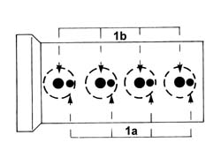
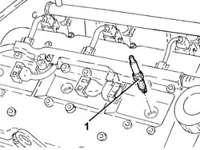

5510D10 spark plugs - r+r
- Path
- Procedures > 55 ELECTRICAL EQUIPMENT > 5510 ENGINE IGNITION > 5510D spark plugs and lead > 5510D10 spark plugs - r+r
- Kind
- repair procedure (removal / refitting; the operation number is the code)
- Applies to
- engines: 1.6 TS, 2.0 TS, 3.2 V6; all production periods
- Interactive page
- https://sloeber94.github.io/elrnDB-a147/en/#/3025509
Applies to: engines: 1.6 TS, 2.0 TS; all production periods
 Removing
Removing
 Refitting
RefittingEnsure that the ignition key is in the OFF position, then disconnect the negative battery terminal (-).
 | Name | Connector |
|---|---|---|
- | Battery |
Proceed with removal 1016A40 ignition coil cover on cylinder head- r+r .
Proceed with removal 5510C14 ignition coil/s - r+r .
Blow through with compressed air in the spark plug openings and remove any impurities or traces of dirt.
1. With the engine cold, remove the small side spark plugs (1a) and the large spark plugs (1b).

Applies to: engines: 1.6 TS, 2.0 TS; all production periods
Check the condition of the spark plugs and, if necessary, replace them.
Applies to: engines: 1.6 TS; all production periods; only with equipment: 103 CV
Refitting
RemovingPlace the large centre spark plugs (NGK BKUR6ETB) and the small side ones (NGK CR7ECK) back in their housings and tighten them to the recommended torque.
 | Fastening | Component | Ø | Value (daNm) |
|---|---|---|---|---|
- | - | SIDE SPARK PLUG | M10 | (Cylinder head side) 1.0 ÷ 1.3 |
| Fastening | Component | Ø | Value (daNm) |
|---|---|---|---|---|
- | - | CENTRE SPARK PLUG | M10 | (Cylinder head side) 2.3 ÷ 2.8 |
Applies to: engines: 1.6 TS; all production periods; only with equipment: 120 CV
Place the large centre spark plugs (NGK BKR6EKPA) and the small side ones (NGK PMR7A) back in their housings and tighten them to torque.
| Fastening | Component | Ø | Value (daNm) |
|---|---|---|---|---|
- | - | SIDE SPARK PLUG | M10 | (Cylinder head side) 1.0 ÷ 1.3 |
| Fastening | Component | Ø | Value (daNm) |
|---|---|---|---|---|
- | - | CENTRE SPARK PLUG | M10 | (Cylinder head side) 2.3 ÷ 2.8 |
Proceed with refitting 5510C14 ignition coil/s - r+r .
Proceed with refitting 1016A40 ignition coil cover on cylinder head- r+r .
Connect the negative (-) battery terminal.
Applies to: engines: 2.0 TS; all production periods
Place the large centre spark plugs (NGK BKR6EKPA) and the small side ones (NGK PMR7A) back in their housings and tighten them to torque.
| Fastening | Component | Ø | Value (daNm) |
|---|---|---|---|---|
- | - | SIDE SPARK PLUG | M10 | (Cylinder head side) 1.0 ÷ 1.3 |
| Fastening | Component | Ø | Value (daNm) |
|---|---|---|---|---|
- | - | CENTRE SPARK PLUG | M10 | (Cylinder head side) 2.3 ÷ 2.8 |
Proceed with refitting 5510C14 ignition coil/s - r+r .
Proceed with refitting 1016A40 ignition coil cover on cylinder head- r+r .
Connect the negative (-) battery terminal.
Applies to: engines: 3.2 V6; all production periods
Removing
RefittingEnsure that the ignition key is in the OFF position, then disconnect the negative battery terminal (-).
| Name | Connector |
|---|---|---|
- | Battery |
Proceed with removal 1016A42 left hand cylinder head ignition coil cover - r+r .
Proceed with removal 5510C16 left hand cylinder head ignition coil - r+r .
Proceed with removal 1072B50 sleeves connecting air capacity box to inlet manifold is - r+r .
Proceed with removal 5510C18 right hand cylinder head ignition coil - r+r .
Blow compressed air through the spark plug sockets to remove any foreign bodies or traces of dirt.
1. With the engine cold, unscrew and remove the spark plugs.

Applies to: engines: 3.2 V6; all production periods
Check the condition of the engine spark plugs and, when necessary, replace them.
Applies to: engines: 3.2 V6; all production periods
Refitting
RemovingPlace the spark plugs back in their housings and tighten them to the recommended torque.
| Fastening | Component | Ø | Value (daNm) |
|---|---|---|---|---|
- | - | SPARK PLUGS | M14 | (Cylinder head side) 2.4 ÷ 3.0 |
Proceed with refitting 5510C18 right hand cylinder head ignition coil - r+r .
Proceed with refitting 1072B50 sleeves connecting air capacity box to inlet manifold is - r+r .
Proceed with refitting 5510C16 left hand cylinder head ignition coil - r+r .
Proceed with refitting 1016A42 left hand cylinder head ignition coil cover - r+r .
Connect the negative (-) battery terminal.
Topics linked from this page (7)
- 1016A40 ignition coil cover on cylinder head- r+r
- 1016A42 left hand cylinder head ignition coil cover - r+r
- 1072B50 sleeves connecting air capacity box to inlet manifold is - r+r
- 5510C14 ignition coil/s - r+r
- 5510C16 left hand cylinder head ignition coil - r+r
- 5510C18 right hand cylinder head ignition coil - r+r
- A1B Battery ( Connectors )
Topics that link to this page (13)
- B10 ENGINE DOES NOT START / UNDER NO CIRCUMSTANCES
- B13 ENGINE STARTS WITH DIFFICULTY'
- B20 ENGINE STARTS, AND CUTS OUT STRAIGHT AWAY
- D01 ENGINE NOT RUNNING SMOOTHLY / (HESISTANT)
- D02 ENGINE NOT RUNNING SMOOTHLY / (LOSING POWER)
- D03 ENGINE NOT RUNNING SMOOTHLY / (IRREGULAR OPERATION)
- D10 ENGINE IDLE IRREGULAR
- X01 EXCESSIVE FUEL CONSUMPTION
- Z54 MISFIRE ERROR IN ONE CYLINDER
- 0010K60 60,000km service coupon - emission control versions
- 0010M01 100,000km service coupon, emission control versions
- 0010M20 120,000km service coupon, emission control versions
- 0010M80 180,000km service coupon - emission control versions